Chinatown in the 70s
Chinatown in the 70s
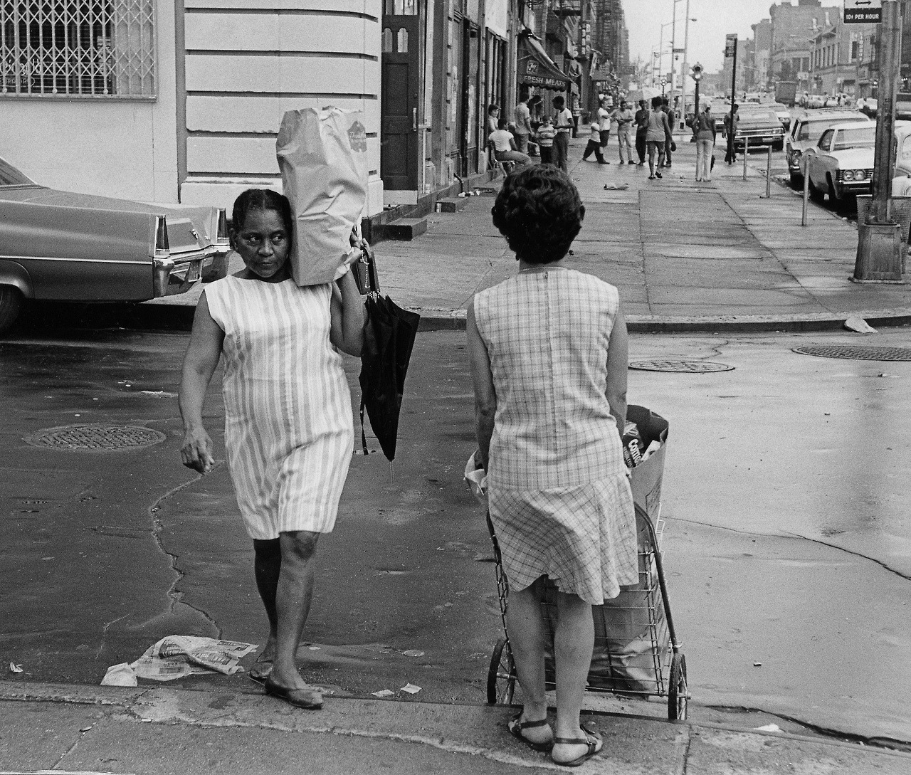
Washington Heights, 1970s
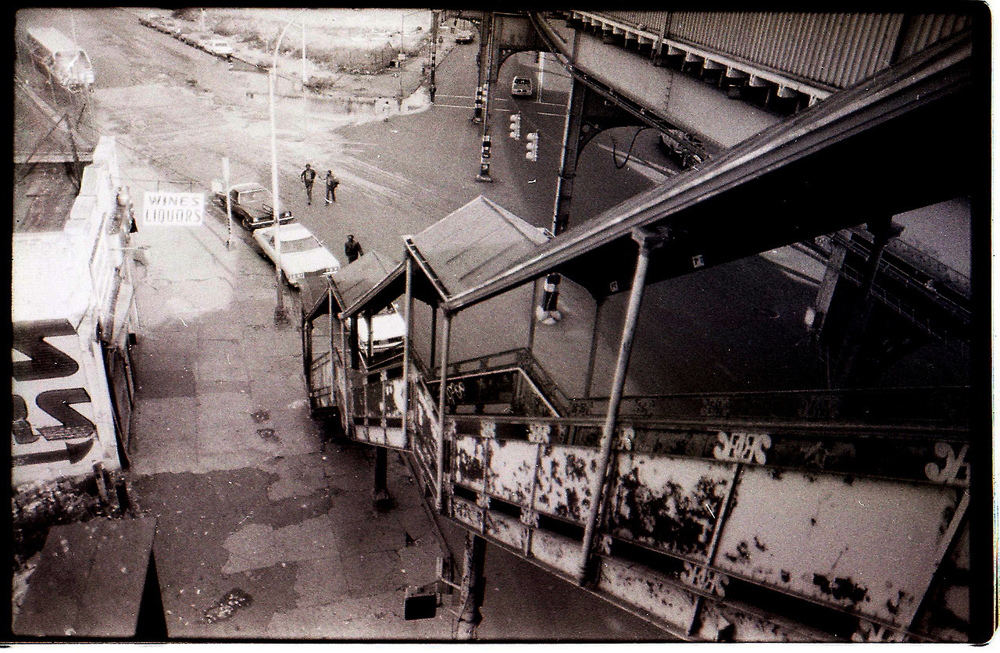
Harlem, 1970s
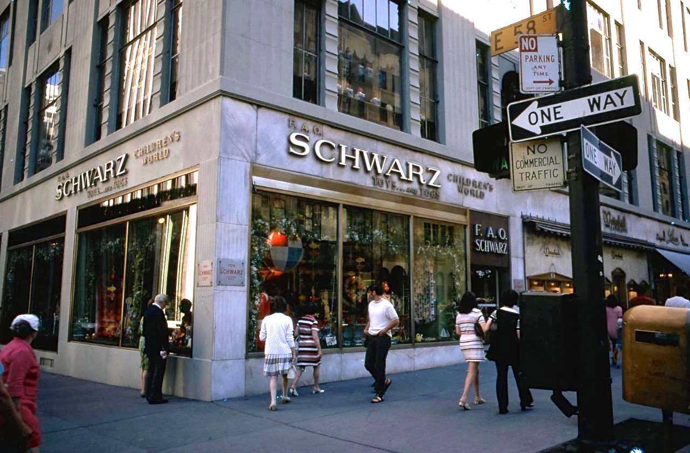
FAO Schwartz in 1970

John Lennon & Yoko, NYC, 1973.
© Bob Gruen
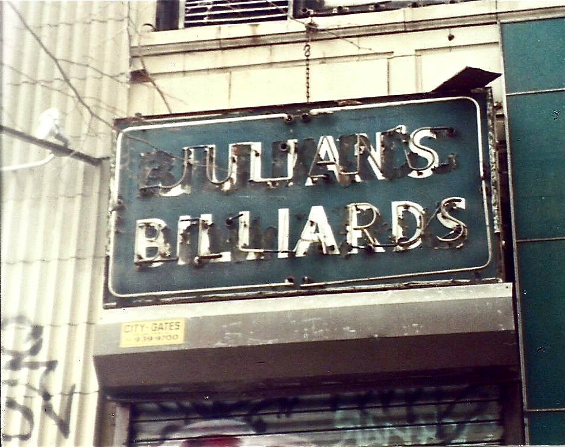
Julian’s Billiards sign, 1993

Lunch break.
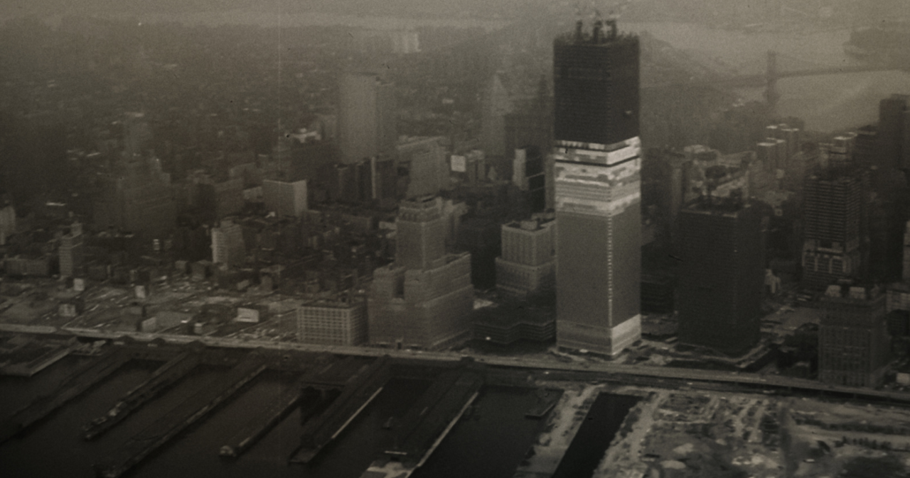
WTC under construction, 1970

It’s a whole new world.
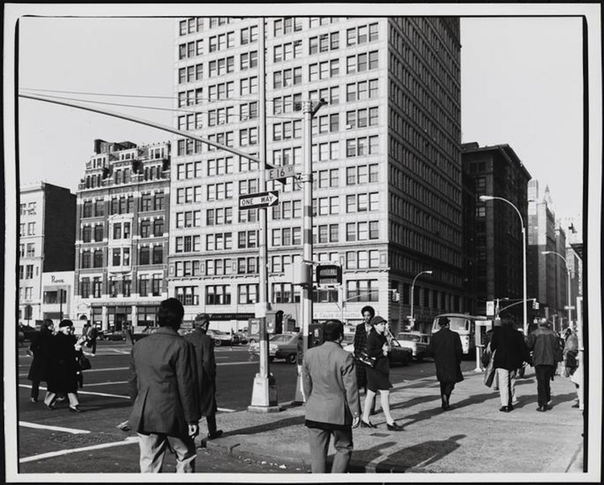
Union Square in the 70s
A walk through Central Park, 1969
Lisa Sliwa riding the rails
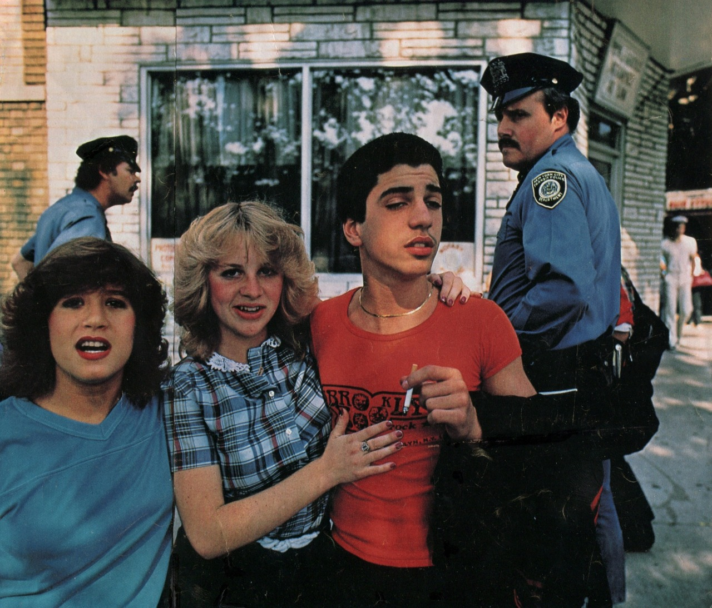
Early 1980s Bay Ridge, Brooklyn, photo by Robert Madden, from an old issue of National Geographic.
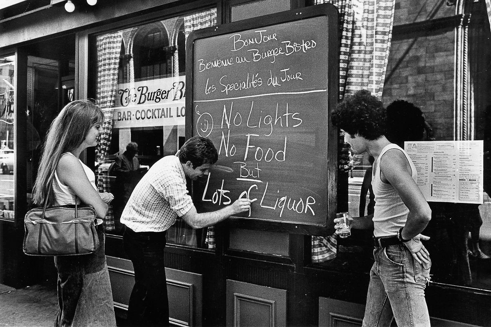
Restaurant menu during the 1977 Blackout. Lots of liquor.
Street party during the 1977 Blackout, Soho
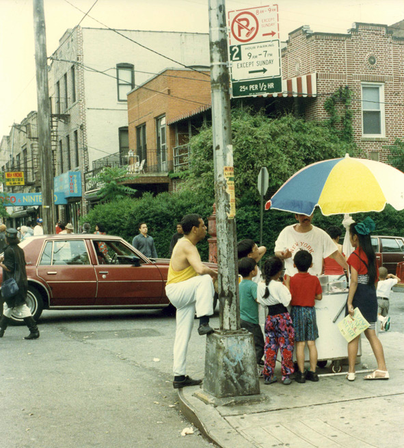
Bronx 1980s~

bball in Riverside Park, 1975.
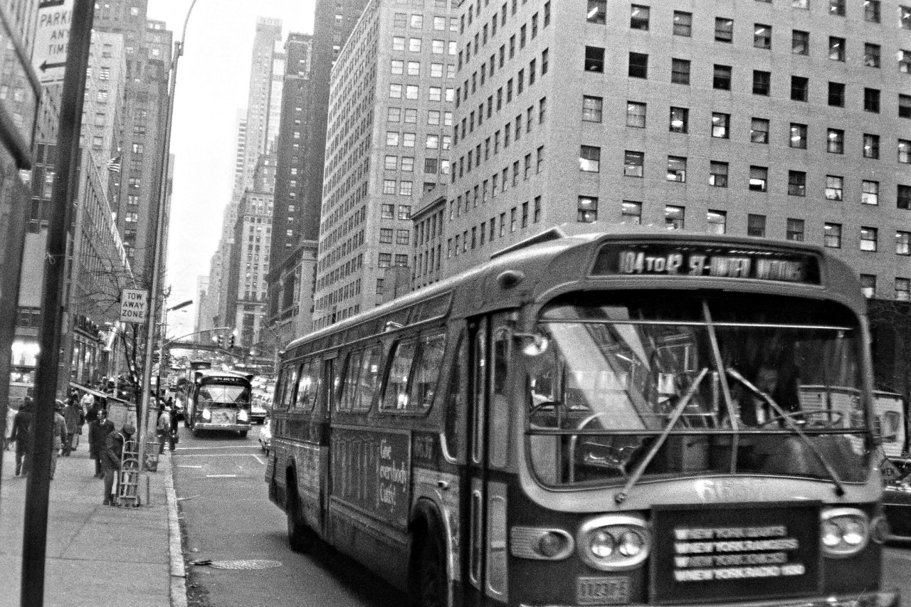
The M104 bus on 42nd Street, mid-1970s.

42nd Street, ca. 1971

Central Park in the mid 70s
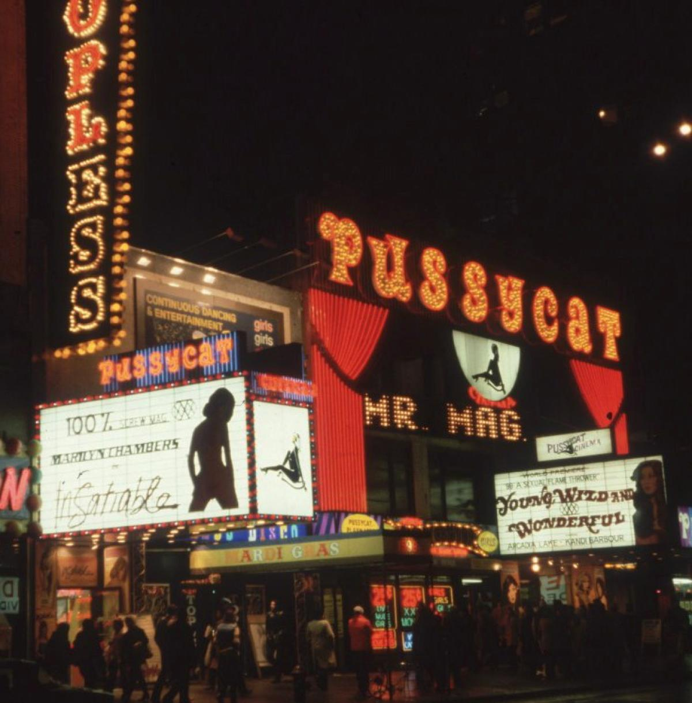
Broadway between 48th and 49th, ca. 1980

2nd Ave around 59th St, 1977
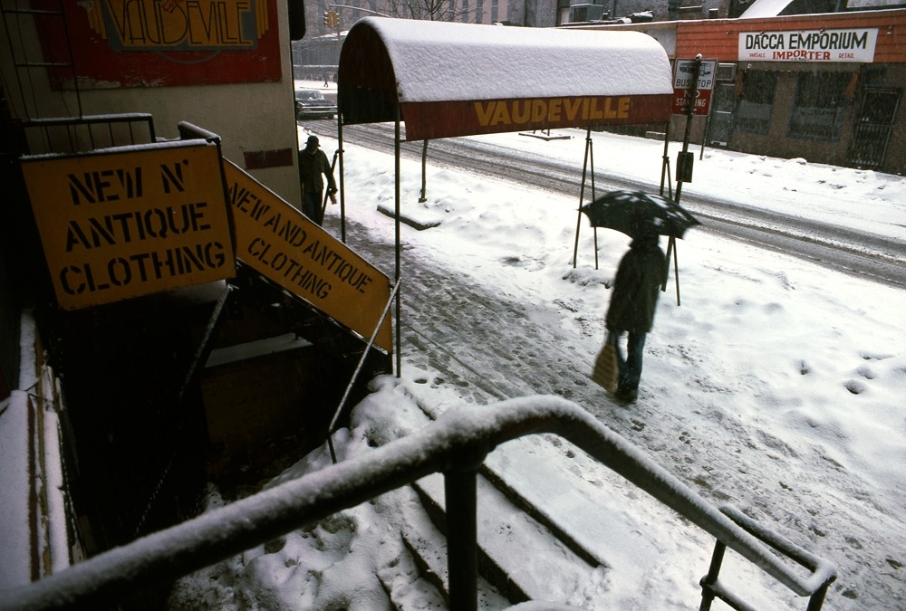
St. Marks Place, 1978

Business people on State Street, 1977
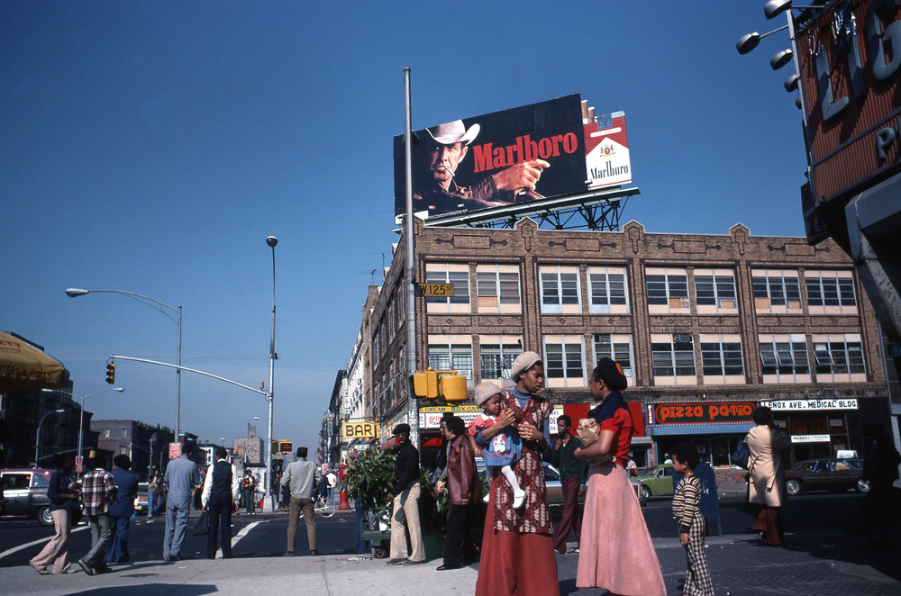
125th St, 1977

Late 70s graffiti
White people dancing.

Adam’s Apple disco, 61st and 1st, 1978

42nd Street, 1970
Photo by Chris Ross